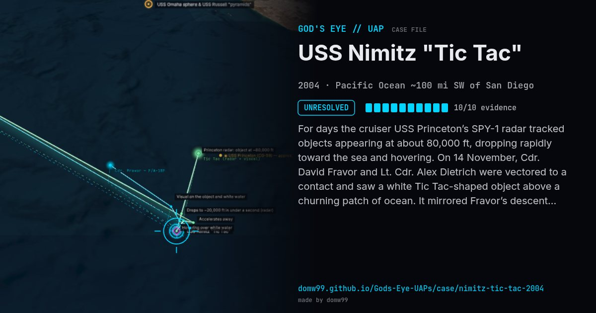

USS Nimitz "Tic Tac"

For days the cruiser USS Princeton’s SPY-1 radar tracked objects appearing at about 80,000 ft, dropping rapidly toward the sea and hovering. On 14 November, Cdr. David Fravor and Lt. Cdr. Alex Dietrich were vectored to a contact and saw a white Tic Tac-shaped object above a churning patch of ocean. It mirrored Fravor’s descent, then accelerated away; seconds later Princeton reported it at the pilots’ CAP point ~60 miles away. A later sortie filmed the FLIR1 video.
Explanation
The Pentagon released the FLIR1 video in 2020 and describes the object as unidentified. Skeptics argue the FLIR clip shows a distant aircraft; the pilots’ visual account is independent of the video.
What was seen
Shape: White, smooth 40-ft "Tic Tac"
Witnesses: 4 aircrew (Fravor, Dietrich + WSOs), USS Princeton radar operators
Duration: ~5 minutes visual; radar over ~2 weeks